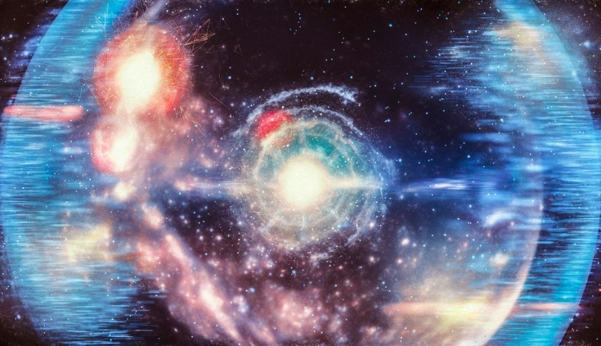
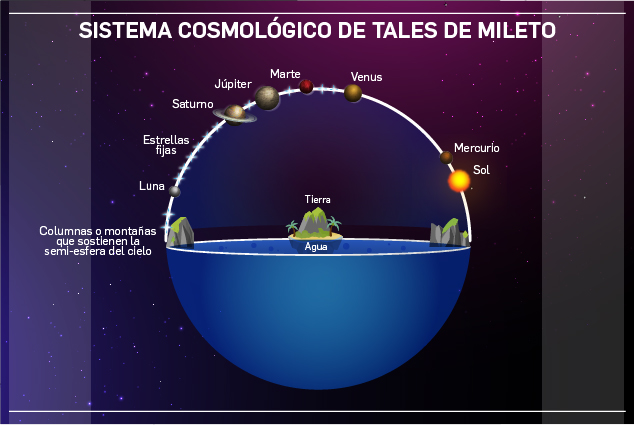
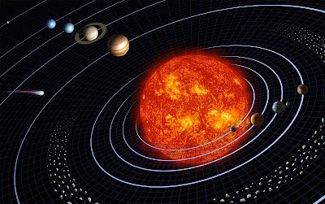
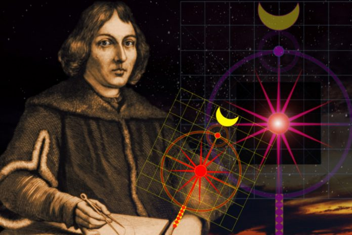
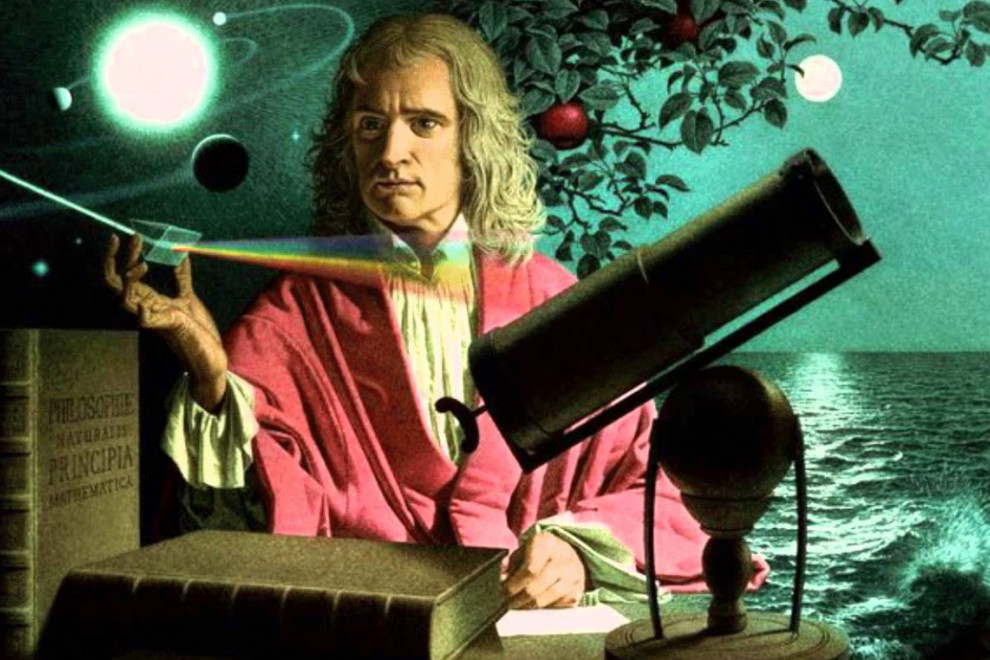
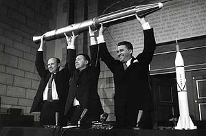
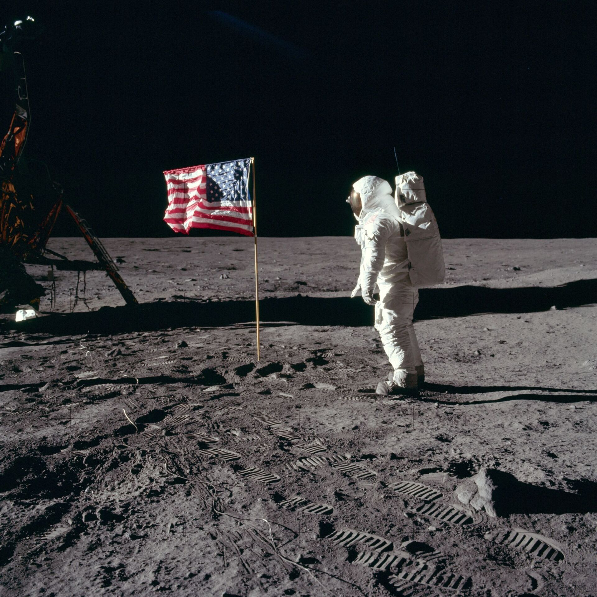
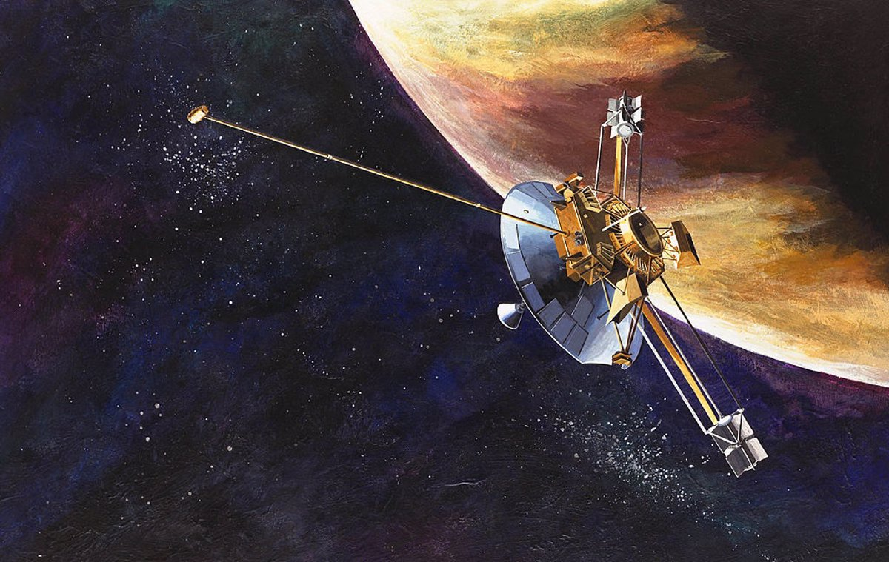
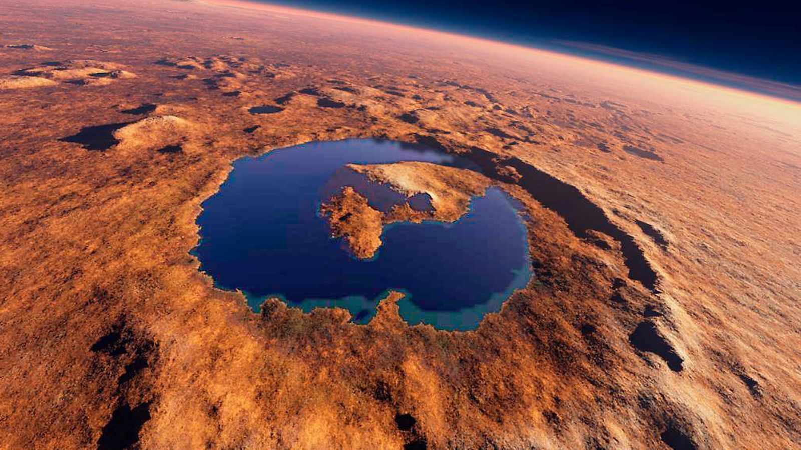

Big Bang
Segun esta teoría la materia era un punto infinitamente pequeño y de altísima densidad que, en un momento dado, explotó y se expandió en todas las direcciones, creando lo que conocemos como nuestro Universo, lo que incluye también el espacio y el tiempo. Esto ocurrió hace unos 13.800 millones de años.

620 A.C / Tales de Mileto
Una de sus teorías sostenía que la tierra sobre la que pisamos es una especie de isla que flota sobre el agua de forma parecida a un leño. Utilizando esta analogía, Tales de Mileto quiso explicar por qué la tierra a veces temblaba: al no estar sostenida sobre unas bases fijas, el agua que hay debajo de la superficie terrestre hace que ésta se tambalee.

569 a.c-475 a.c / Pitagoras
En astronomía Pitágoras enseñó que la Tierra era una esfera en el centro del universo. También reconoció que la órbita de la Luna estaba inclinada hacia el ecuador de la Tierra y fue uno de los primeros en comprender que Venus como estrella de la tarde era el mismo planeta que Venus como la estrella de la mañana. Sus alumnos proponían que el sol era el centro del universo.

1473 / Copernico
Propone los tres movimientos de la tierra (rotación, traslación y oscilación cónica). El primero tiene la duración de un día, el segundo de un año, y el tercero ocurre también en un año de manera progresiva.
Este último movimiento es el que a ojos modernos puede parecer extraño. Pero fue la forma en que Copérnico explica la variación de temperatura en las distintas estaciones del año.

1609 / Galileo
El telescopio presentado por Galileo Galilei el 25 de agosto de 1609. Aquel instrumento de refracción de 1,27 metros de largo, con una lente convexa delante y otra lente ocular cóncava permitió al físico italiano convertirse en el padre de la astronomía moderna. Gracias a ese aparato descubre 4 lunas jovianas , los cráteres de la Luna y la Vía Láctea.

1642 / Isaac Newton
Newton fue el primero en demostrar que las leyes naturales que gobiernan el movimiento en la Tierra y las que gobiernan el movimiento de los cuerpos celestes son las mismas. Es, a menudo, calificado como el científico más grande de todos los tiempos, y su obra como la culminación de la revolución científica.

1812 / Johann Galle descrubre Neptuno.
El descubrimiento fue realizado en la primera noche que el astrónomo alemán Galle lo intentó: el 23 de septiembre de 1846. Debido al color azul verdoso que presentaba el planeta, Galle lo bautizó con el nombre del dios del mar: Neptuno.

1958 / DC EE.UU.
Lanzamiento de Explorer 1. Este fue el primer satélite de los EE.UU en orbitar a la Tierra. La noche del 31 de Enero de 1958, los Estados Unidos orbitaron su primer satélite: el Explorer 1. El esfuerzo fue parte de la participación de la nación en el Año Geofísico Internacional (IGY), un esfuerzo científico pacífico. También marcó el primer paso de América en la carrera espacial durante la Guerra Fría.

1969 / Neil Armstrong
El 21 de julio de 1969 se convierte en el primer hombre en pisar la luna y pronuncia la frase célebre: “Es un pequeño paso para un hombre, pero un gran salto para la humanidad”. La nave Apolo de la misión se envió al espacio el 16 de julio de 1969, realizó su alunizaje el 20 de julio de ese mismo año y al día siguiente Armstrong y Aldrin se convirtieron en los primeros en caminar sobre la superficie lunar.

1972 / En EE.UU
Lanzan a Pioneer 10, el primer satélite con destino a Júpiter. Pioneer 10 es una sonda espacial estadounidense lanzada el 2 de marzo de 1972, siendo la primera sonda que atravesó con éxito el cinturón de asteroides y que llegó hasta el planeta Júpiter, el objetivo principal de su misión.

2000 / Marte
En mayo de 2002 la nave Mars Odyssey detectó hidrógeno superficial. Esto hizo pensar en la posibilidad de que este hidrógeno se pudiera combinar con grupos hidroxilo para formar agua helada.Se encuentra nueva evidencia de agua en Marte. En enero de 2004 la sonda europea Mars Express detectó agua en el polo sur del planeta, pero congelada. La observación de líneas espectrales de vapor de agua se hizo al final del verano, cuando el "hielo seco" se sublima y deja un casquete residual de agua.
